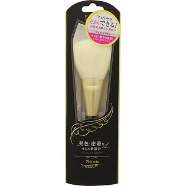
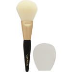

返回列表
产品名称：フェリセラ フェイスブラシ

ラッキーコーポレーション フェリセラ フェイスブラシ ＿
メーカー ラッキーコーポレーション
JANコード 4903329998958
商品の特徴
発色・密着を考えた新設計
とろけるような肌触り
- 成分・分量
- ＜素材＞
ブラシ：木、アルミニウム、PBT
ブラシカバー：PU
- 用法及び用量
- ・本来の目的以外の用途には使用しないでください。
・アレルギーをお持ちの方やお肌の弱い方は使用しないでください。
・強く引っ張ったり、無理な負担をかけないでください。破損する恐れがあります。
・使用条件により変色、色落ちや品質劣化する場合があります。
・使用後は通気性の良い所に保管してください。
・極端な高温や低温になるところ、湿気やほこりの多い所での使用、保管は避けてください。
・ぬれたまま、風呂場や洗面台などに放置しないでください。
・なめたり口の中に絶対入れないでください。
・7歳未満のお子様には絶対に与えないでください。
・お子様の手の届かない所に保管してください。
・廃棄する際は、各自治体の廃棄要領に従ってゴミとして廃棄してください。
・使用中や使用後に、はれ、かゆみ、刺激等、お肌に異常があらわれた場合は、 使用を中止し、専門医等にご相談ください。